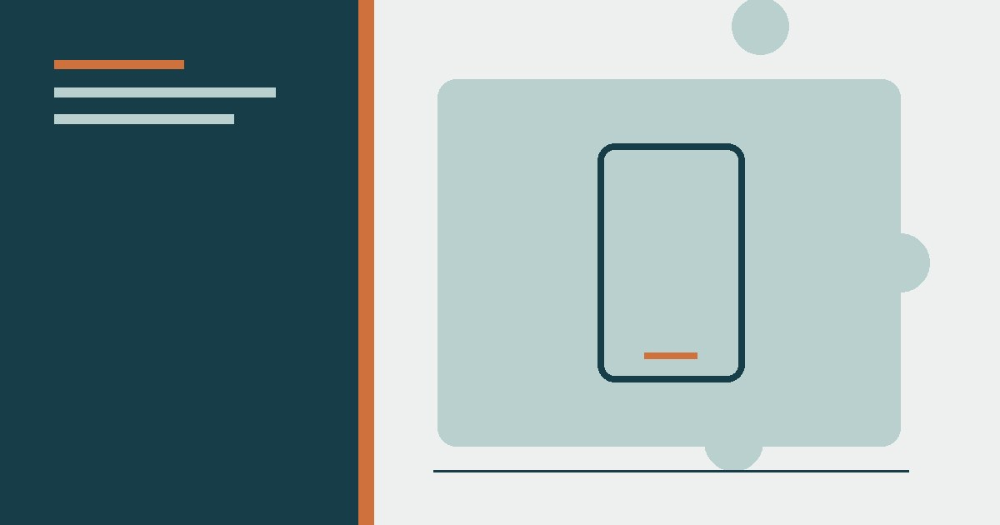

تكنولوجيا
كيف تختار هاتفًا ذكيًا يناسب ميزانيتك؟ دليل المبتدئين
دليل عملي لاختيار هاتف يناسب الميزانية حسب الاستخدام والتحديثات والبطارية والتخزين والكاميرا، مع قائمة فحص قبل الشراء.
أفضل 10 تطبيقات أندرويد مجانية: إدارة الملفات، حماية الخصوصية، تطبيقات الإنتاجية، التصوير، والتطبيقات التي تستحق التجربة فعلًا.

توفر التطبيق وسعره وإعلاناته وصلاحياته قد تتغير بعد نشر المقال. افحص صفحة المتجر والمطور وتاريخ التحديث والمراجعات الحديثة قبل التثبيت.
اسأل: هل الصلاحية ضرورية للوظيفة الأساسية؟ ارفض الوصول غير الضروري، وراجع الصلاحيات بعد التحديث، واحذف التطبيق الذي لا تستخدمه بدل تركه يعمل في الخلفية.
متجر التطبيقات مليء بآلاف التطبيقات، لكن أغلبها إما مكرر أو محشو بالإعلانات أو يطلب صلاحيات أكثر مما يحتاج. جمعنا فئات من التطبيقات المفيدة كنقطة بداية. افحص السعر والإعلانات والصلاحيات وسياسة الخصوصية في صفحة المتجر، لأنها قد تتغير بمرور الوقت.
مدير ملفات كامل بواجهة أنيقة ووضع تقسيم شاشة لنسخ الملفات بين مجلدين بسهولة. النسخة المجانية تغطي معظم الاحتياجات، وهو أدق وأسرع من مدير الملفات الافتراضي في كثير من الهواتف.
على عكس برامج الحماية الثقيلة التي تبطئ الهاتف، Malwarebytes خفيف ويركز على ما يهم: فحص التطبيقات المشبوهة والروابط الخطرة. النسخة المجانية كافية للاستخدام الشخصي.
تطبيق جوجل الرسمي المجاني: يقترح الملفات الكبيرة والصور المكررة والملفات المؤقتة بأمان، ويمنحك مساحة أكبر دون حذف أشياء مهمة. كما يتيح مشاركة الملفات بسرعة مع الأجهزة القريبة.
تطبيق يمنع التطبيقات من الاتصال بالإنترنت دون إذنك — لمنع التطبيقات من إرسال بياناتك في الخلفية أو عرض إعلانات خارجية. ممتاز لتوفير البطارية والخصوصية معًا.
أبسط وأسرع تطبيق ملاحظات: قوائم، تذكيرات بالموقع، ملاحظات صوتية، ومزامنة فورية مع كل أجهزتك. مثالي لقوائم التسوق والأفكار السريعة.
قارئ كتب إلكترونية أنيق يدعم PDF وEPUB ومئات الصيغ، بواجهة عربية ممتازة، وبدون إعلانات في النسخة المجانية. خيار مثالي لقراءة الكتب على الهاتف.
تطبيق كاميرا مفتوح المصدر يمنحك تحكمًا كاملًا: ISO، توازن أبيض، تركيز يدوي، ووضع تصوير بصمت كامل. ممتاز لمن يريد إمكانيات متقدمة دون دفع.
يتتبع خطواتك ونشاطك ونومك تلقائيًا، ويعرضها برسوم واضحة. خفيف، مجاني، ومتوافق مع معظم الساعات الذكية.
التطبيق الوحيد الذي يعطيك معلومات حقيقية عن بطاريتك: نسبة التدهور، استهلاك التطبيقات، وسرعة الشحن. نصائحه تطيل عمر البطارية فعلًا.
تطبيق طقس جميل ودقيق بصور واقعية خلابة، يعرض توقعات مفصلة بالساعة، ومجاني بدون إعلانات مزعجة.
الهاتف الذكي يصبح أداة قوية بالتطبيقات الصحيحة. اختر فقط ما يحل حاجة واضحة، وراجع الصلاحيات واحذف ما لا تستخدمه. التطبيق المجاني قد يغير نموذج التسعير أو جمع البيانات، لذلك راجع صفحة المتجر عند التثبيت والتحديث.
لا تثبّت كل ما تراه؛ اختر تطبيقات موثوقة بأقل أذونات ضرورية. ضع التطبيقات المتشابهة في مجلد واحد، ومراجعة الأذونات دوريًا يقلّل التتبّع. أدوات النظام الأساسية (ملفات، نسخ، تحرير) تكفي لمعظم الحاجات.
رُوجعت المعلومات العامة في هذا المقال بالاستناد إلى المصادر التالية. الروابط الخارجية قد تُحدّث محتواها بمرور الوقت.
دليل عملي لاختيار هاتف يناسب الميزانية حسب الاستخدام والتحديثات والبطارية والتخزين والكاميرا، مع قائمة فحص قبل الشراء.

دليل حماية الحسابات من الاختراق: كلمات مرور فريدة، مدير كلمات المرور، المصادقة متعددة العوامل، مفاتيح المرور وخطة استرداد الحساب.

شرح مبسط ودقيق للذكاء الاصطناعي: التدريب والاستدلال والذكاء التوليدي والأخطاء والخصوصية وكيفية استخدام الأدوات بوعي.